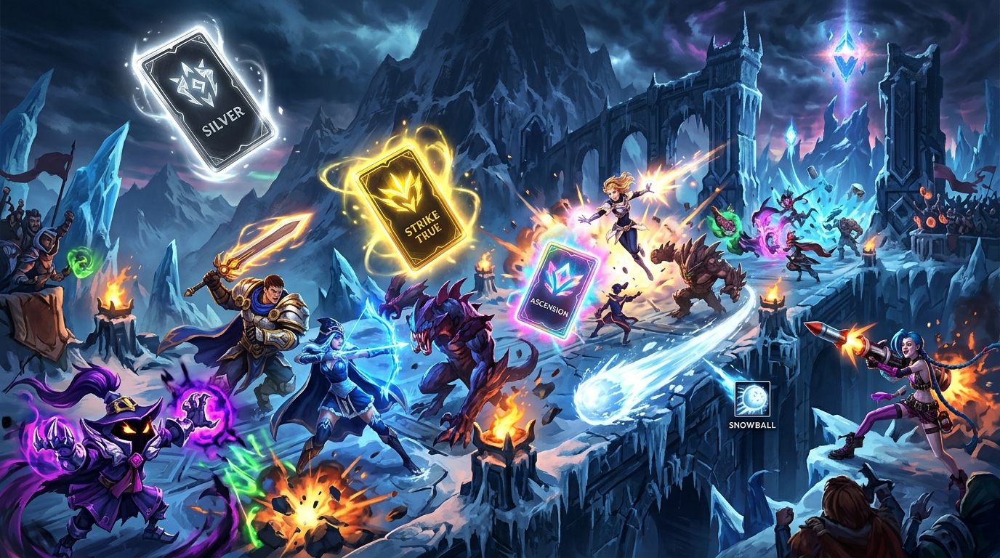
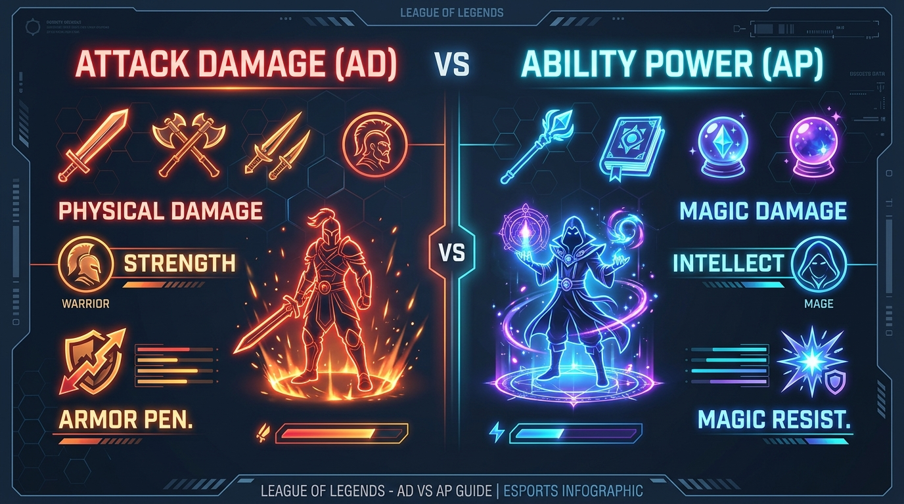
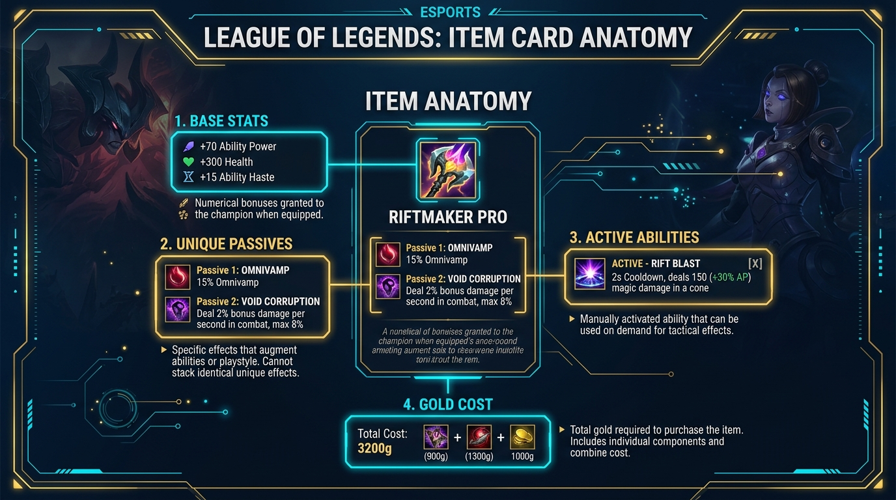
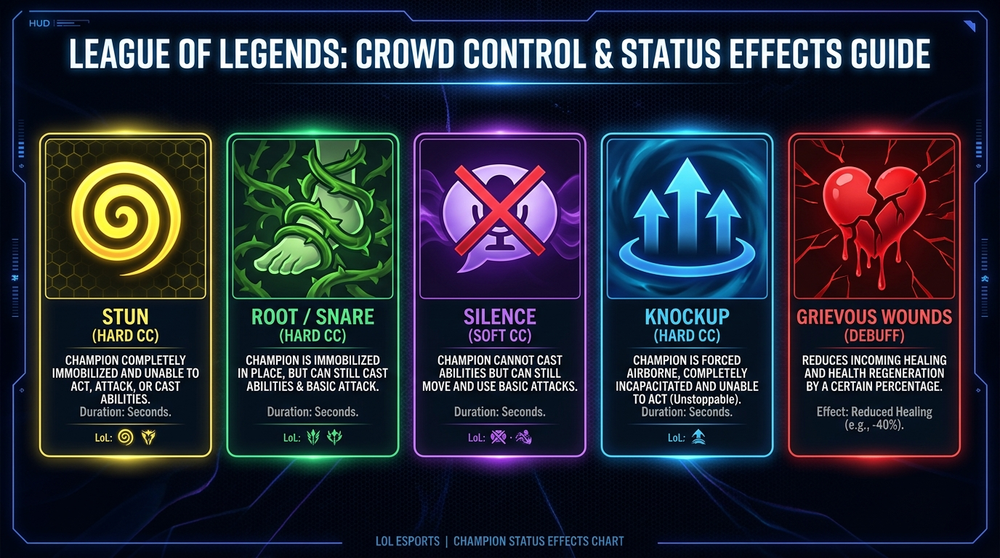

Guide Pédagogique 101
League of Legends : Le Manuel du Joueur ARAM
Maîtriser les Statistiques, les Objets et le Chaos d'ARAM: MAYHEM
📜 Sommaire de la Formation
1
Introduction & Mentalité ARAM2
AD vs AP & Types de Dégâts3
Toutes les Stats (Pen, Sustain, Hâte, Def)4
Anatomie des Objets (Passifs vs Actifs)5
Altérations d'État & Contrôles de Foule6
Spécial ARAM: MAYHEM (Augments & Strats)
Bienvenue dans League of Legends ! Contrairement à la Faille de l'Invocateur classique (5v5 sur 3 voies avec jungle), l'ARAM (All Random All Mid) se déroule sur l'Abîme Hurlant : une seule voie enneigée, 10 champions en permanence au même endroit, et du combat non-stop !
Les 4 Règles d'Or de l'ARAM :
- Pas de Rappel à la base (No Back) : Tu ne peux pas régénérer tes PV en rentrant à la base. Tu dois mourir pour pouvoir acheter des objets !
- Achat uniquement à la mort : Une fois sorti de la zone d'apparition au début, la boutique se ferme. Pour dépenser ton or, il faut mourir.
- Portails Hextech & Reliques : Utilise les portails près de ton Nexus pour rejoindre le front instantanément. Des reliques de soins sont disposées sur le bord de la carte pour vous soigner, toi et ton équipe.
- Sort d'Invocateur Snowball (Marquage/Rush) : Lance une boule de neige ! Si elle touche un ennemi, réactive le sort pour te téléporter directement sur lui. C'est l'outil indispensable pour les combattants et tanks !
💡 Conseil de Stratège débutant
Ne garde pas 4 000 pièces d'or sur toi en essayant de survivre avec 50 PV ! Si la vague de sbires est poussée et que tes alliés sont là, c'est parfois une excellente décision de mourir pour revenir 15 secondes plus tard avec 2 objets complets et balayer l'équipe adverse.
Dans League of Legends, les dégâts et la puissance de ton champion reposent sur deux grandes familles : les Dégâts d'Attaque (AD) et la Puissance Magique (AP).

🗡️ AD (Attack Damage / Dégâts Physiques)
Couleur du texte : Orange / Rouge
C'est quoi ? Augmente les dégâts de tes auto-attaques (clic droit) et des compétences physiques.
Champs typiques : Tireurs/ADC (Jinx, Caitlyn), Assassins (Zed, Talon), Combattants (Garen, Darius).
Contré par : L'Armure (Armor).
🔮 AP (Ability Power / Puissance Magique)
Couleur du texte : Bleu / Violet
C'est quoi ? Augmente la puissance des sorts magiques et compétences à ratio AP.
Champs typiques : Mages (Lux, Veigar, Ahri), Assassins Magiques (Akali, Katarina), Enchanteurs.
Contré par : La Résistance Magique (Magic Resist).
Comment savoir si un sort ou un item est AD ou AP ?
Sur l'écran, regarde la couleur des chiffres d'un sort quand tu survoles sa description avec ta souris :
- Chiffre Orange (+AD) : Le sort devient plus fort si tu achètes des objets AD (Épées, Léthalité, Crit).
- Chiffre Vert/Bleu (+AP) : Le sort devient plus fort si tu achètes des objets AP (Bâtons, Tome amplificateur).
- Chiffre Jaune/Vert foncé (+Armor/PV) : Certains tanks (Malphite, Rammus) augmentent leurs dégâts avec leurs PV ou leur Armure !
Les 3 Types de Dégâts infligés :
| Type de Dégâts |
Couleur à l'écran |
Propriété & Réduction |
| Physiques |
Orange |
Réduits par l'Armure de la cible. Pénétrés par la Léthalité & Armor Pen. |
| Magiques |
Bleu / Violet |
Réduits par la Résistance Magique (RM). Pénétrés par la Pénétration Magique. |
| Bruts (True Damage) |
Blanc / Jaune |
IGNORE L'ARMURE ET LA RM ! Inflige le montant exact indiqué. (Ex: Ulty de Darius, Vayne). |
Voici l'explication simple de toutes les autres statistiques inscrites sur vos objets :
1. Vitesse d'Attaque & Coup Critique (Offensif AD)
- Vitesse d'Attaque (Attack Speed) : Augmente le nombre d'auto-attaques par seconde (ex: 1.5 = 1.5 coups/sec).
- Chances de Coup Critique (Crit Chance) : Pourcentage de chance que ton auto-attaque inflige des dégâts bonus considérables (+75% à +100% dégâts). Max 100%.
2. Hâte de Compétence (Ability Haste / CDR)
La Hâte de Compétence permet de relancer tes sorts plus souvent en réduisant leurs temps de recharge (Cooldowns). Plus tu en as, plus tu spammes tes compétences !
3. Pénétration d'Armure & Pénétration Magique
Quand l'ennemi achète de la défense (Armure ou RM), tes dégâts baissent. La Pénétration permet d'ignorer cette défense :
- Léthalité (Flat Armor Pen) : Retire un montant FIXE d'armure. Idéal contre les cibles fragiles sans armure (Mages, ADC).
- Pénétration d'Armure en % (Ex: Salutation de Dominik) : Retire un POURCENTAGE de l'armure. Indispensable contre les GROS Tanks !
- Pénétration Magique (Flat Pen / % Pen) : Même fonctionnement mais pour réduire la Résistance Magique en jouant Mage.
4. Sustain : Vol de Vie, Vampirisme & Omnivamp
| Statistique |
Comment ça fonctionne ? |
| Vol de Vie (Life Steal) |
Te soigne uniquement sur les dégâts de tes auto-attaques physiques. |
| Vampirisme Physique |
Te soigne sur TOUS les dégâts physiques (auto-attaques + sorts physiques). |
| Omnivamp (Omnivampirisme) |
Te soigne sur TOUS les dégâts infligés (Magiques, Physiques, Bruts). (Efficacité réduite à 33% sur les compétences de zone/AoE). |
⚠️ L'effet Anti-Soin : Hémorragie (Grievous Wounds)
Si l'équipe adverse possède des champions qui se soignent énormément (Aatrox, Warwick, Yuumi, Soraka, Volibear), tu DOIS acheter un objet avec l'effet
Hémorragie (Grievous Wounds). Cet effet réduit tous les soins reçus par la cible de 40% !
Exemples d'objets anti-soin : Marque-bourreau (AD), Orbe d'oubli (AP), Vêtement de ronces / Cotte de mailles (Tank).
Dans la boutique de League of Legends, chaque objet complet apporte des statistiques brutes, mais surtout des effets uniques.

Passif vs Actif d'un Objet :
- Passif d'un objet (Automatique) : Fonctionne tout seul en arrière-plan dès que tu possèdes l'objet. Par exemple : "Inflige des dégâts de brûlure quand tu touches avec un sort" (Liandry) ou "Accorde du bouclier quand tu tombes sous 30% PV" (Gage de Sterak / Arc-bouclier).
- Actif d'un objet (Manuel !) : L'objet est placé dans une case d'inventaire numérotée de 1 à 6. Tu DOIS appuyer sur la touche correspondante (ex: 1, 2, 3 ou une touche raccourci) pour déclencher l'effet ! Par exemple : Sablier de Zhonya (Deviens invulnérable en stase pendant 2.5s) ou Ceinture-roquette Hextech (Fait un petit dash en avant).
⚠️ Attention aux Passifs Nommés (Unique Passives)
Si deux objets ont un passif avec le
MÊME NOM (par exemple
Lame d'Ombre ou
Ligne de Vie), leurs effets ne se cumulent PAS ! Tu ne recevras l'effet qu'une seule fois. Vérifie toujours le nom des passifs.
Les Contrôles de Foule (Crowd Control ou CC) sont les sortilèges d'entrave qui empêchent un ennemi de jouer ou de se déplacer.

Les Principaux Effets de CC :
| Nom du CC |
Déplacement ? |
Sorts & Attaques ? |
Notes & Détails |
| Étourdissement (Stun) |
❌ Bloqué |
❌ Bloqué |
Hard CC. La cible est totalement immobile et inerte. |
| Immobilisation (Root / Snare) |
❌ Bloqué |
✅ Autorisé ! |
Empêche de marcher ou de dash, mais la cible PEUT attaquer et lancer des sorts sur place ! |
| Silence |
✅ Autorisé |
❌ Sorts bloqués |
Empêche de lancer le moindre sort. La cible peut marcher et auto-attaquer. |
| Projection (Knockup / Airborne) |
❌ Bloqué |
❌ Bloqué |
LE ROI DES CC ! La cible est projetée dans les airs. Ne peut pas être réduit par la Ténacité ni annulé par la Purge ! |
| Suppression |
❌ Bloqué |
❌ Bloqué |
(Ex: Ultys de Malzahar, Warwick). Inannulable par la Purge d'invocateur. Nécessite un Bandeau de Purge (QSS). |
| Aveuglement (Blind) |
✅ Autorisé |
Attaques râtées |
(Ex: Flèche de Teemo). Les auto-attaques n'infligent absolument AUCUN dégât pendant la durée. |
Qu'est-ce que la Ténacité (Tenacity) ?
La Ténacité est une statistique défensive qui réduit la DURÉE des Stuns, Roots, Silences et Ralentissements ! Si tu as 30% de Ténacité, un Stun de 2 secondes ne durera que 1.4 seconde sur toi. (Attention : n'affecte pas les Knockups ni les Suppressions).
Le mode ARAM: MAYHEM pousse le chaos d'ARAM au niveau supérieur en introduisant le système des Optimisations (Augments) !
1. Les Tiers d'Optimisations (Augments)
Au cours de la partie, tu seras invité à choisir parmi 3 cartes d'Optimisations. Elles existent en 3 raretés :
- Argent (Silver) : Bonus statistiques confortables, hâte de compétence, vitesse de déplacement ou utilitaires.
- Or (Gold) : Effets puissants (ex: compétences qui appliquent des effets à l'impact, boucliers massifs, réinitialisations de cooldowns).
- Prismatique (Prismatic) : Effets Game-Changer qui modifient complètement le gameplay (ex: ultime utilisable deux fois, dégâts bruts démesurés, invulnérabilité sous conditions).
2. Objets Prismatiques
Dans ARAM: Mayhem, tu peux également acquérir ou tirer au sort des Objets Prismatiques. Ce me sont des objets ultra-puissants dotés de statistiques hors-normes et d'effets passifs démultipliés.
3. Conseils Pro pour Gagner en ARAM: MAYHEM :
- Cherche la Synergie, pas juste la Rareté : Une Augment Or ou Argent qui s'accorde parfaitement avec le kit de ton champion est souvent meilleure qu'une Augment Prismatique hors-sujet !
- Adapte ton Build : Si tu obtiens une Augment qui donne des ratios AP sur tes auto-attaques, envisage de faire des objets Vitesse d'Attaque + AP !
- Amuse-toi avec les Combos : Ne reste pas bloqué sur les builds recommandés traditionnels. ARAM Mayhem est fait pour tester des combinaisons complètement déjantées.